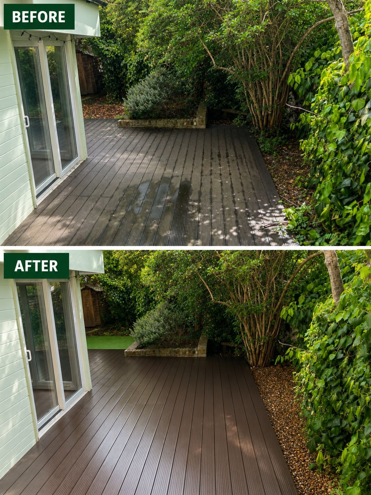
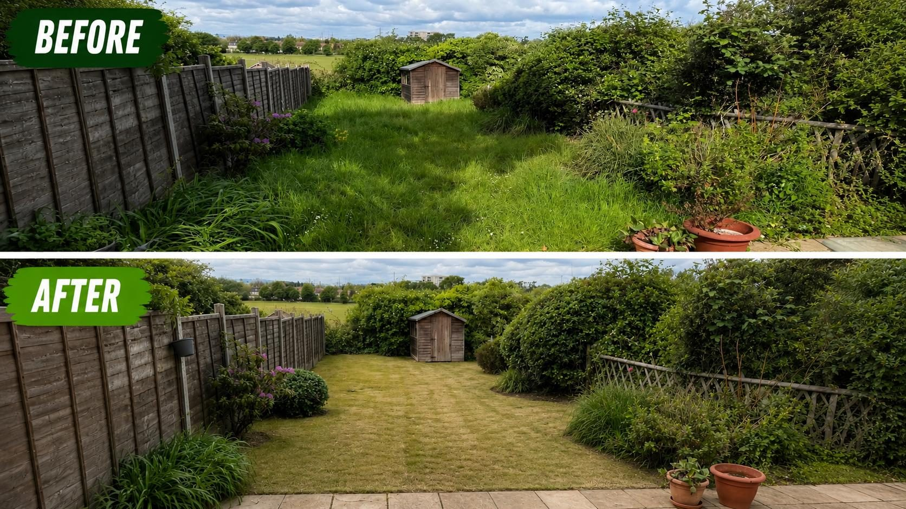
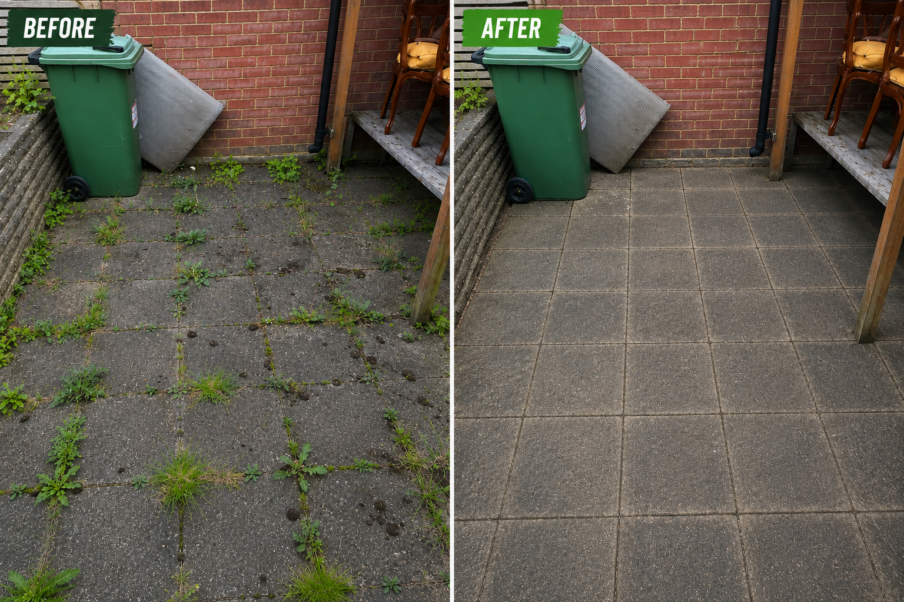
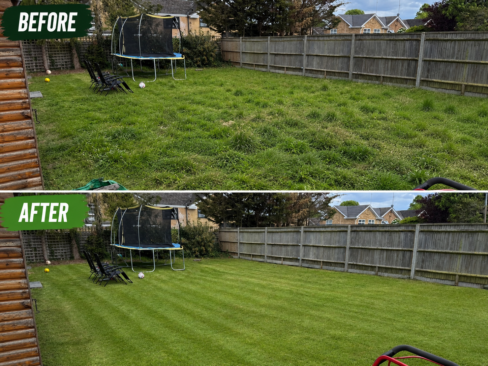
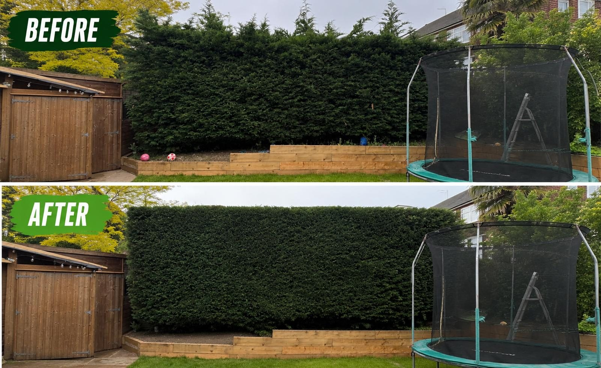
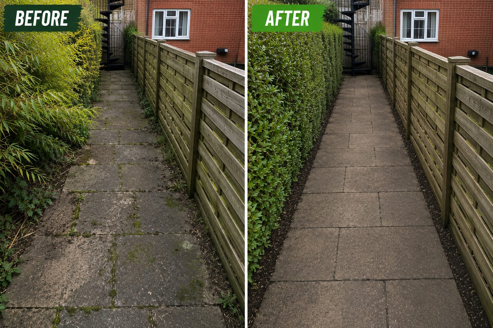
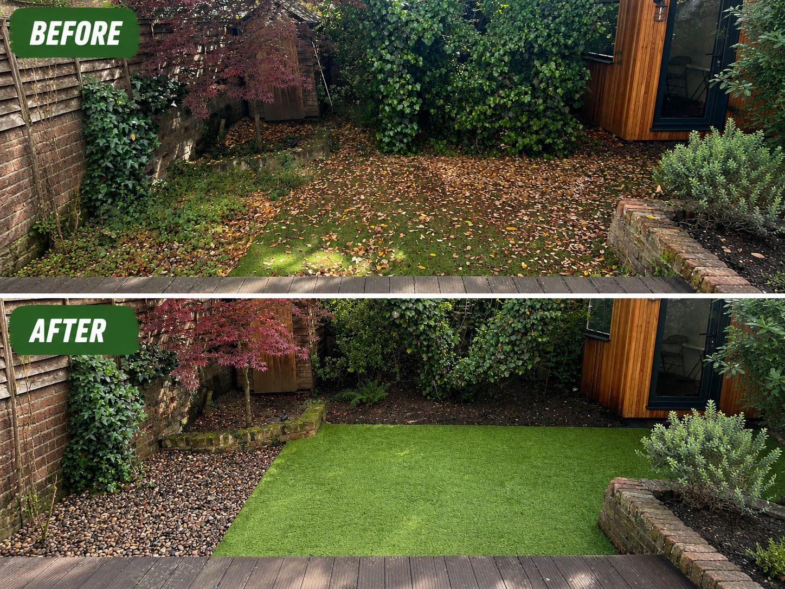
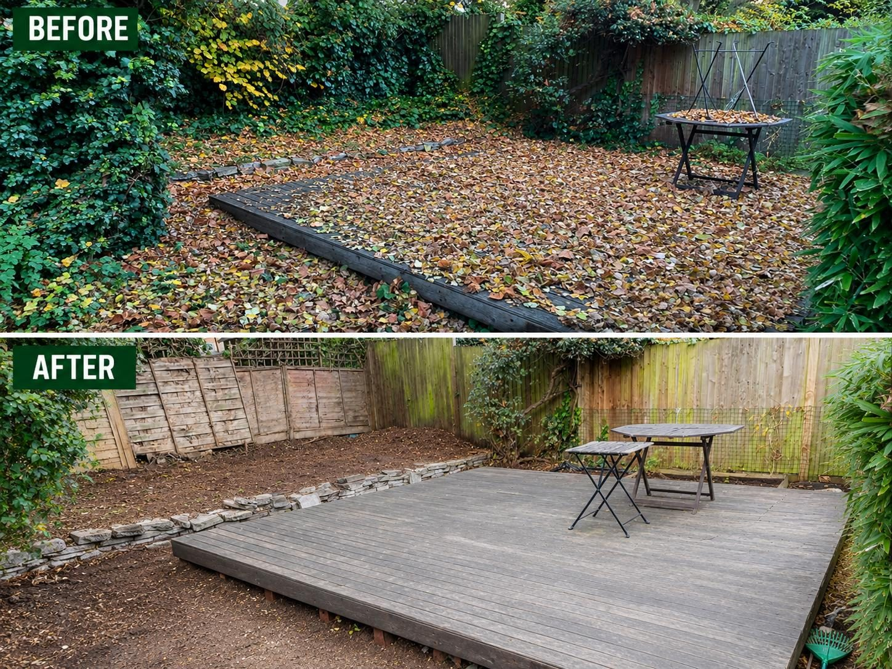
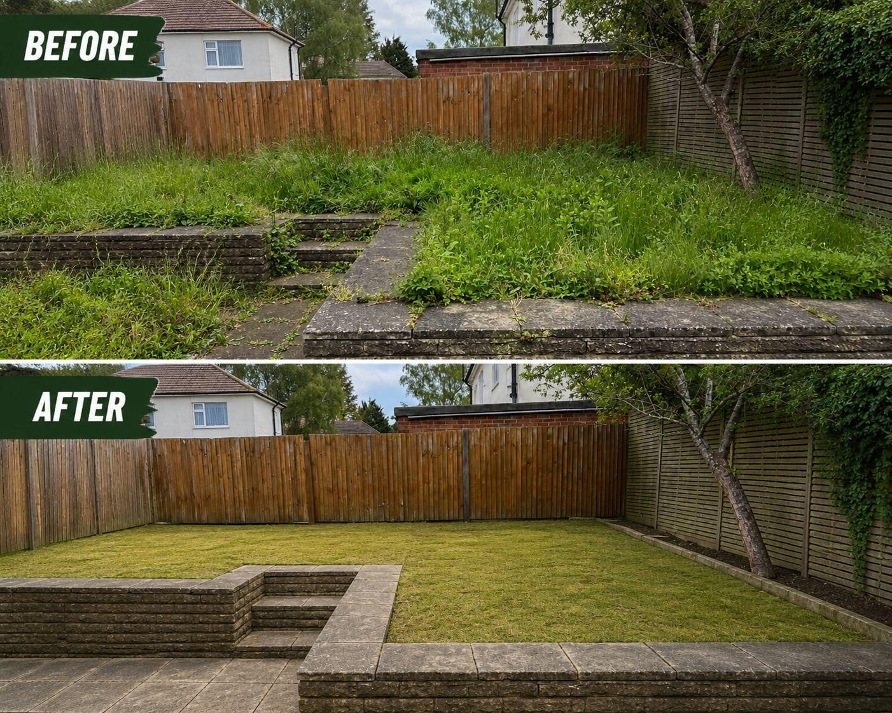

Gallery / Work
Before, after, and properly looked after.
Recent transformations across lawns, hedges, patios, decking, commercial outdoor spaces and garden tidy-ups across Greater London and the surrounding areas we cover.
Recent work
Updated transformations

Decking refresh
A cleaner surface makes the whole garden feel sharper.
Recent before-and-after work showing weathered decking refreshed with careful cleaning and a tidy finish.

Before / After
Large lawn transformation

Before / After
Patio clean-up

Before / After
Long grass recovery

Before / After
Hedge shaping

Before / After
Pathway clearance

Before / After
Artificial grass finish

Before / After
Decking area clearance

Before / After